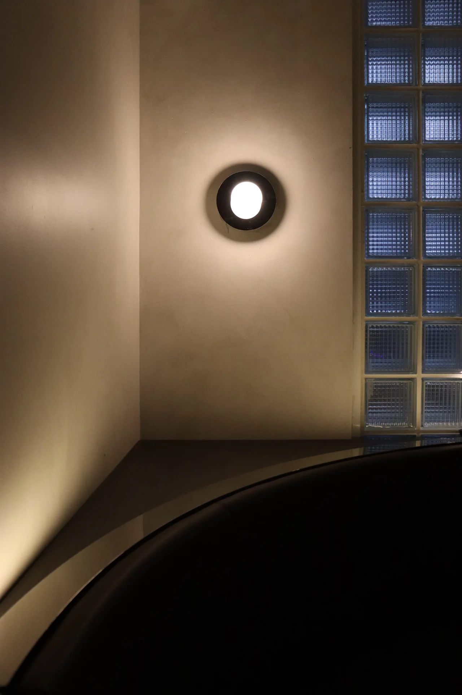

D DESIGN OFFICE — A SPATIAL PRACTICE
The art of
being somewhere.
Not just a space.
A way to feel.
We create spaces that are functional, timeless, and deeply personal. Places to gather, to discover, to call your own.
D Design Office brings concept, material and detail together — shaping bespoke interiors across hospitality, retail and residential life.
Inside our practice ↘Spatial stories.(08)
Get lost.
Find a feeling.
EIGHT SPACES. ENDLESS WAYS TO SEE THEM.
From the first spark,
to the last detail.
We work closely with you to shape a space around your needs and personality. Every decision is part of a bigger picture.

01Concept & identity +
Concept design and development, realistic 3D renders and branding design. A clear idea, before anything else.
02Material & atmosphere +
Material, finishes and furniture selection. Bespoke joinery and lighting design, specified down to the detail.
03Documentation & approvals +
Design documentation for RDM, strata and owner approvals. DA, CC and CDC approval documentation, tender and construction documentation.
04On-site review +
On-site construction review, connecting the original design intention with the finished space.
somewhere.↗